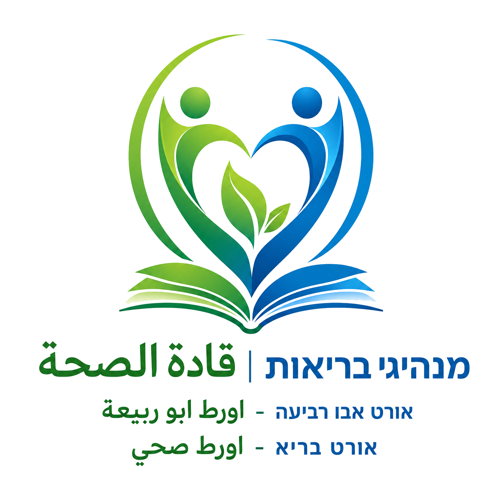
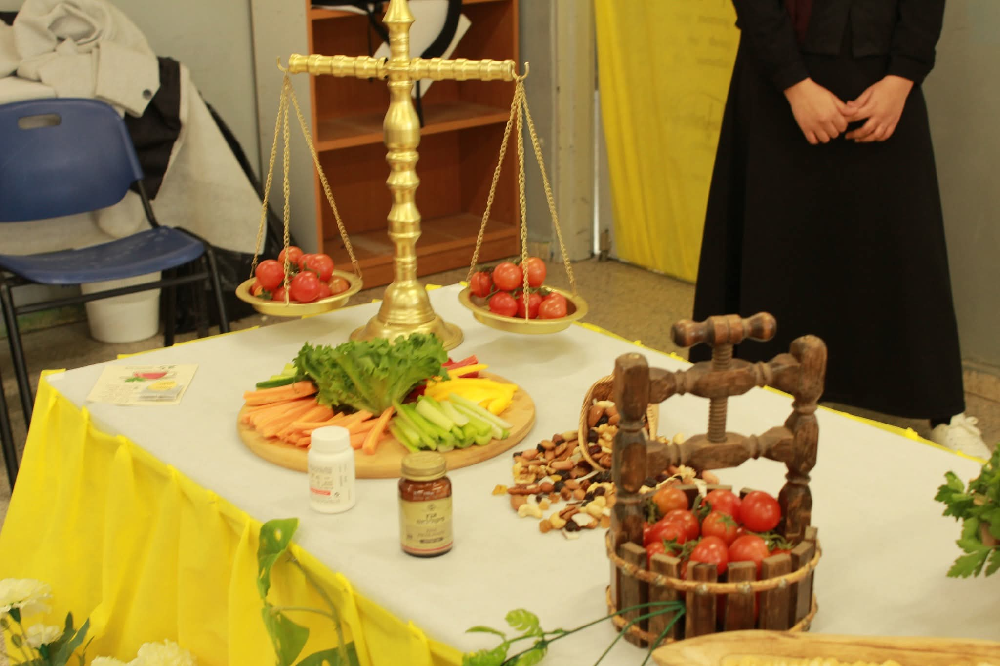

مشروبات محلّاة
משקאות ממותקים
✅ البديل: ماء وشاي الأعشاب الصحي חלופה: מים ותה צמחים בריא

قادة الصحة מנהיגי בריאותذاكرة رقمية حية | זיכרון דיגיטלי חי

دعوة للجنة | קריאה לוועדה
شكراً لإدارة المدرسة، الطلاب، المعلمين، الأهل، شبكة أورط، אורטוב ولـ אורט בריא.
תודה להנהלת בית הספר, לתלמידים, למורים, להורים, לרשת אורט, לאורטוב ולאורט בריא.
← العودة إلى الموقع الرئيسي | חזרה לאתר הראשי ←